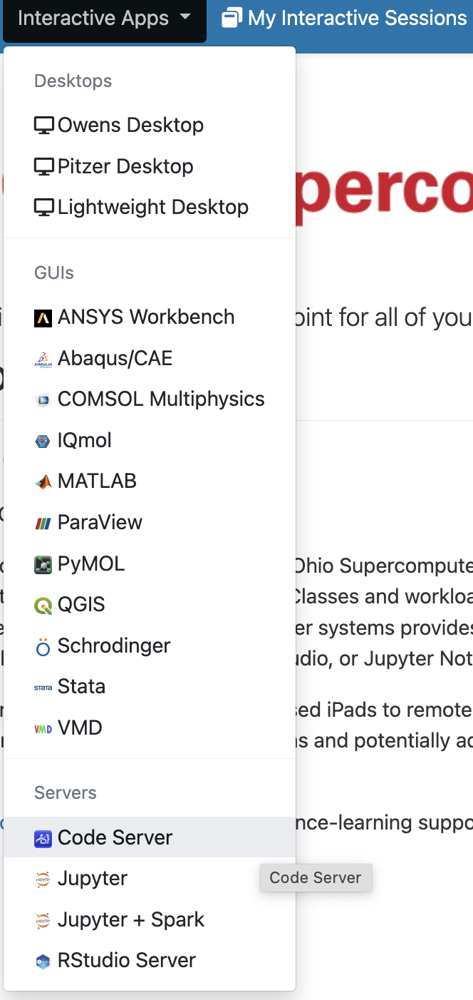

Week 3 lab — part 1:
Computational Infrastructure
1 Introduction to the lab
x
2 Computational infrastructure overview
Due in large part to the amount of data involved, you don’t typically use a laptop or desktop computer to work with HTS data, or with genomics and transcriptomics data more generally.
Additionally, most of the specialized tools (i.e., programs / software) that help you analyze your data can only be run through a “command-line interface” (CLI).
And even those that have a “graphical user interface” (GUI) are more efficiently and reproducibly run through a CLI:
Efficiency — A CLI allows you to write a simple loop to run it in the same way for many samples. (In combination with the computing power of a supercomputer, this in turn allows you to process those hundreds of samples in parallel.)
Reproducibility — You can easily save all commands and scripts which would allow you to rerun a project rather straightforwardly.
Therefore, a typical computational infrastructure to do what we may call “command-line genomics” involves:
- A supercomputer1 — in our case, the Ohio Supercomputer Center (OSC)
- A text editor — I recommend and will demonstrate VS Code
- The Unix shell (terminal)
- R (or perhaps Python) for interactive statistical analysis and visualization.
Below, we will go through the first three of these. In the lab next week, we will cover the fourth.
[Often dividable in 2 sections: compute-heavy command-line programs, then not compute-heavy with R.]
A genomics project usually involves sequentially running an array of bioinformatics programs (or “tools”). For instance, as we’ll discuss next week, an RNA-seq project may include:
raw read QC => raw read trimming => read alignment mapping => gene counting
If you will often do genomics projects like the ones mentioned above, it’s hard to avoid using the infrastructure as described. But here are some conditions in which you might reasonably avoid it:
- You’re doing a single genomics project, your main research focus is elsewhere
- You have data which can be analyzed with a relatively small command-line-based part, such as metabarcoding or RNA-seq.
In such cases, you might be able to get someone else to do the command-line work, or you could try Galaxy, a cloud-based bioinformatics platform with a web browser interface and no coding.
3 The Ohio Supercomputer Center (OSC)
3.1 Introduction to OSC
What is a supercomputer?
A supercomputer is a highly interconnected set of many computer processors and storage units. You can think of it simply as a network of computers.
Supercomputers are also commonly referred to as High-Performance Computing (HPC) clusters or simply compute clusters. This is what Owens, one of the OSC supercomputers, physically looks like:

Why do I need a supercomputer?
- Often, your genomics dataset is too large to be handled efficiently, or even at all, by a laptop or desktop computer.
- To speed up long-running analyses by using more computing power, and repeated analyses (like the independent alignment of reads for different samples) by running them in parallel.
- It’s also a great place to store large amounts of data.
The Ohio Supercomputer Center (OSC)

The Ohio Supercomputer Center (OSC) provides computing resources to researchers (and others) across Ohio.
OSC has two supercomputers/clusters (named Owens and Pitzer), and lots of infrastructure for their usage. Research usage is charged but at heavily subsidized rates, and most or all OSU colleges absorb these costs at the college level (!).
The Structure of a Supercomputer
We can think of a supercomputer as having three main parts:
- File Systems: Where files are stored (these are shared between the two OSC clusters)
- Login Nodes: The handful of computers everyone shares after logging in
- Compute Nodes: The many computers you can reserve to run your analyses

What is different on a supercomputer like at OSC?
Compared to command-line computing on a laptop or desktop, the following aspects are different when working on a supercomputer like at OSC?
Operating system
Login versus compute nodes (node ≈ computer)
“Login nodes”, the nodes you end up on after logging in, are not meant for heavy computing and you have to request access to “compute nodes” to run most analyses.Software
Because you don’t have administrator rights, and because the system is shared by so many people, you generally can’t install and use software “the regular way”.- For system-wide installed software: some programs are directly available, while more specialized programs like for bioinformatics need to be explicitly loaded.
- If something is not installed, it’s best to ask OSC, or use solutions like Conda or containers that are outside the scope of this introduction.
“Non-interactive” usage is common, using a job scheduler (Slurm)
You submit your scripts to the Slurm queue and monitor the resulting jobs. We will …
3.2 The OSC OnDemand web portal
The OSC OnDemand web portal allows you to use a web browser to access OSC resources such as:
- A file browser where you can also create and rename folders and files, etc.
- A Unix shell
- A host of “Interactive Apps”: programs such as RStudio, Jupyter, VS Code and QGIS.
When you go to https://ondemand.osc.edu, you first need to log in with your OSC (not OSU!) credentials. After that, you should see a landing page similar to the one below:

The main part of the page (below the logo) only contains some general OSC messages and updates — what we will focus on instead are some of the options in the blue bar along the top.
File System Access
Let’s start with Files. Hovering over this dropdown menu gives a list of directories you have access to. If your account is brand new, you should only have three:
- A Home directory (starts with
/users)
Two directories directly associated with the OSC “project” PAS2250 that I added you to: 2
- A “project” directory (starts with
/fs/ess) — permanent, backed-up storage - A “scratch” directory (starts with
/fs/scratch) — temporary storage
I’ll select the scratch directory, /fs/scratch/PAS2250:
Once there, I can see a list of directories and files inside this Project directory, and I can click on the directories to explore the contents further:
[IMAGE TBA]
This interface is much like the file browser on your own computer, so you can also create, delete, move and copy files and folders, and even upload (from your computer to OSC) and download (from OSC your computer) files3 — see the buttons across the top.
On Your Own: Create your own folder
TBA
Unix Shell Access (under Clusters)
Interacting with a supercomputer in a point-and-click manner only goes so far. Using a supercomputer effectively requires interacting with the system using a command-line interface (CLI) of a Unix shell.
Under the Clusters dropdown menu, you can access a Unix shell either on Owens or Pitzer:
I’m selecting a shell on the Pitzer supercomputer, which will open a new browser tab looking like this:
We most commonly interact with a supercomputer using a Unix shell, and we’ll learn about the basics of doing so soon. However, we’ll mostly be accessing a Unix shell in a different manner, namely inside the VS Code text editor, which also gives us some additional functionality in a user-friendly way.
Interactive Apps
We can access programs with Graphical User Interfaces (GUIs; point-and-click interfaces) via the Interactive Apps dropdown menu 4 — let’s select VS Code using the “Code Server” button:

4 The VS Code text editor
4.1 What is VS Code?
VS Code (in full, Visual Studio Code) is basically a fancy text editor.
To emphasize the additional functionality relative to basic text editors like Notepad and TextEdit, editors like VS Code are also referred to as “IDEs”: Integrated Development Environments. The RStudio program is another good example of an IDE. For our purposes:
- VS code will be our IDE for Unix shell code (this week)
- RStudio will be our IDE for R (in the differential expression lab next week)
Conveniently, we can use a version of this editor (sometimes referred to as Code Server, like in the Interactive Apps menu) in our browser via the OSC OnDemand website.
4.2 Connecting to VS Code
Because “Interactive Apps” like VS Code and RStudio run on compute nodes, we need to fill out a form and specify the following details (as shown in the image below) to reserve such a node:
- The OSC Project that should be billed for the compute resource usage
- The amount of time we want to make a reservation for 5
- The “working directory” (starting location in the file system) for the program
- The version of VS Code
[TBA - form with correct values filled out]
Click on Launch at the bottom and this will send your request to the compute job scheduler. First, your job will be “Queued” — that is, waiting for the job scheduler to allocate resources on the compute nodes to it:

In general, it should be granted resources within a few seconds (the card will then say “Starting”), and be ready for usage (“Running”) in another couple of seconds:

Then, you can click on the blue Connect to VS Code button to open a new browser tab that runs VS Code. When VS Code opens, you may get these two pop-ups — click “Yes” and “Don’t Show Again”, respectively:


4.3 The VS Code User Interface

Side bars
The Activity Bar (narrow side bar) on the far left has:
- A (“hamburger menu”), which has menu items like
Filethat you often find in a top bar. - A (cog wheel icon) in the bottom, through which you can mainly access settings.
- Icons that serve to switch between different options for the (wide) Side Bar — we’ll only use:
- Explorer: File browser (and, e.g., an outline for the active file)
- Extensions: To install extensions (we’ll install one later)
Editor pane and Welcome document
The main part of the VS Code is the editor pane. Whenever you open VS Code, a tab with a Welcome document is automatically opened. This provides some help and e.g. a handy overview of recently opened folders.
We can also use the Welcome document 6 to open a new text file by clicking New file below Start (alternatively, click => File => New File), which opens as a second “tab” in the editor pane.
Terminal (with a Unix shell)
Open a terminal by clicking => Terminal => New Terminal.
On Your Own: Try a few color themes
Open the Command Palette and start typing “color theme”, and you’ll see the relevant option pop up.
Then, try out a few themes and see what you like!
(You can also access the Color Themes option via => Color Theme.)
5 The Unix shell
5.1 What is the Unix shell?
A computer’s shell is the interface in a Terminal window that allows you to interact with your computer by typing commands rather than pointing-and-clicking.
It is also referred to as the the “command line” — with “command-line tools/programs” being software that is run using shell commands.
Finally, the Unix shell, then, is the shell of Unix-based computers, which include Mac and Linux (but not Windows) operating systems. 7
In many ways, as mentioned in the box above, you can think of using a command-line bioinformatics program as using just another command.
Therefore, our general skills with Unix commands will very much extend to using command-line bioinformatics tools!
5.2 First steps in the Unix shell
The prompt
Inside your terminal, the “prompt” indicates that the shell is ready for a command. Our prompt at OSC should show the following pieces of information like so:
[<username>@<node-name> <working-dir>]$For example:
[jelmer@p0080 jelmer]$ We type our commands after the dollar sign $, and then press Enter to execute the command. When the command has finished executing, we’ll get our prompt back and can type a new command.
The gray boxes like the ones shown above will be used to show the command line expressions that you should type.
In upcoming boxes, the prompt itself ([...]$) will not be shown, but only the command line expressions that you type. This is to save space and to allow you for copy-and-pasting (but I recommend typing!).
Paler gray boxes below, with italic text, are intended to show the output of commands.
A few simple commands: date, whoami, pwd
The Unix shell comes with hundreds of commands. Let’s start with a few simple ones.
- The
datecommand prints the current date and time:
dateFri Jan 26 14:31:51 EST 2024- The
whoami(who-am-i) command prints your username:
whoamijelmer- The
pwd(Print Working Directory) command prints the path to the directory (=folder) you are currently located in:
pwd/fs/ess/PAS2250/ENT6703/jelmerAll 3 of those commands provided us with some output. That output was printed to screen, which is the default behavior for nearly every Unix command.
- When working in a Unix shell, you are always “in” a specific directory (“dir” for short) and this is called your working directory.
- In a path (= specification of the location of a file or directory) such as that output by
pwd, directories are separated by forward slashes/. - A leading forward slash in a path indicates the root directory of the computer.
- Everything in the shell is case-sensitive
- Avoid spaces in file and dir names! Use e.g. underscores or capitalization to distinguish words.
5.3 cd and command actions, defaults, and arguments
In the above three command line expressions:
- We merely typed a command and nothing else
- The command provided some information, which was printed to screen
But many commands perform an action other than providing information. For example, you can use the command cd to Change Directory (i.e. change your working dir). And like many commands that perform and action, it normally has no output at all.
Let’s use cd to move to another directory by specifying the path to that directory after the cd command (make sure to leave a space after cd!):
cd /fs/ess/PAS2250/ENT6703/share/data/fastqpwd/fs/ess/PAS2250/ENT6703/share/data/fastqIn more abstract terms, what we did above was to provide cd with an argument, namely the path of the dir to move to. Arguments generally tell commands what file or directory to operate on, and come at the end of a command line expression.
As we’ve seen, then, cd gives no output when it succesfully changed the working directory. But let’s also see what happens when it does not succeed — it gives the following error:
cd /fs/Ess/PAS0471bash: cd: /fs/Ess/PAS0471: No such file or directoryYour Turn: What was the problem with the path we specified?
We used a capital E in /Ess/ — this should have been /ess/.
5.4 ls and command options
The default behavior of ls
The ls command, short for “list”, is a command to list files and directories:
lsdata metadata README.md(You should still be in /fs/ess/PAS2250/ENT6703/share. If not, cd there first.)
ls output colors (click to expand)
Unfortunately, the ls output shown above does not show the different colors you should see in your shell — here are some of the most common ones:
- Entries in blue are directories (like
dataandmetadataabove) - Entries in black are regular files (like
README.mdabove) - Entries in red are compressed files (we’ll see an example soon).
The default way that ls shows the output (e.g., non-recursively, all on one line, no details) can be changed by providing ls with options and/or arguments.
Options (to ls)
In general, whereas arguments tell a command what to operate on, options will modify its behavior. For example, we can call ls with the option -l (a dash followed by a lowercase L):
ls -l total 17
drwxr-xr-x 3 jelmer PAS0471 4096 Jul 27 11:53 data
drwxr-xr-x 2 jelmer PAS0471 4096 Jul 27 11:54 metadata
-rw-r--r-- 1 jelmer PAS0471 963 Jul 27 16:48 README.mdNotice that it lists the same three items as our first ls call above, but printed in a different format: one item per line, with additional information included, such as the date and time each file was last modified, and the file sizes (to the left of the date) in bytes.
Let’s add another option, -h:
ls -l -htotal 17K
drwxr-xr-x 3 jelmer PAS0471 4.0K Jul 27 11:53 data
drwxr-xr-x 2 jelmer PAS0471 4.0K Jul 27 11:54 metadata
-rw-r--r-- 1 jelmer PAS0471 964 Jul 27 17:48 README.mdYour Turn: What is different about the output, and what does that mean?
The difference is in the format of the column reporting the sizes of the items listed.
We now have “Human-readable filesizes” (hence-h), where sizes on the scale of kilobytes will be shown in Ks, of megabytes in Ms, and of gigabytes in Gs.
Conveniently, options can be pasted together as follows:
ls -lh # Output not shown, same as aboveCombining options and arguments
Arguments to ls should be dirs or files to operate on. For example, if we wanted to see what’s inside the data dir, instead of inside our working dir, we could type:
ls datafastqWell, that’s not much information, just another dir — so let’s look inside that:
ls data/fastq # These will be shown in red in your output, since they are compressedASPC1_A178V_R1.fastq.gz ASPC1_G31V_R2.fastq.gz Miapaca2_G31V_R1.fastq.gz
ASPC1_A178V_R2.fastq.gz Miapaca2_A178V_R1.fastq.gz Miapaca2_G31V_R2.fastq.gz
ASPC1_G31V_R1.fastq.gz Miapaca2_A178V_R2.fastq.gzAh, gzipped FASTQ files! These contain our sequence data, and we’ll go and explore them in a bit.
Finally, we can combine options and arguments, and let’s do so take a closer look at our dir with FASTQ files — now the -h option is especially useful because it makes it easy to see that the files vary between 4.1 MB and 5.3 MB in size:
ls -lh data/fastqtotal 38M
-rw-r--r-- 1 jelmer PAS0471 4.1M Jul 27 11:53 ASPC1_A178V_R1.fastq.gz
-rw-r--r-- 1 jelmer PAS0471 4.2M Jul 27 11:53 ASPC1_A178V_R2.fastq.gz
-rw-r--r-- 1 jelmer PAS0471 4.1M Jul 27 11:53 ASPC1_G31V_R1.fastq.gz
-rw-r--r-- 1 jelmer PAS0471 4.3M Jul 27 11:53 ASPC1_G31V_R2.fastq.gz
-rw-r--r-- 1 jelmer PAS0471 5.1M Jul 27 11:53 Miapaca2_A178V_R1.fastq.gz
-rw-r--r-- 1 jelmer PAS0471 5.3M Jul 27 11:53 Miapaca2_A178V_R2.fastq.gz
-rw-r--r-- 1 jelmer PAS0471 5.1M Jul 27 11:53 Miapaca2_G31V_R1.fastq.gz
-rw-r--r-- 1 jelmer PAS0471 5.3M Jul 27 11:53 Miapaca2_G31V_R2.fastq.gz5.5 Unix shell recap
We’ve learned about structure of command line expressions in the Unix shell, which include: the command itself, options, arguments, and output (including, in some cases, error messages).
A few general points to remember are that:
- Commands that take actions like changing directory will by default not print output.
- Using options (
ls -l), we can modify the behavior of a command, and using arguments (ls data), we can modify what it operates on in the first place.
If you hit the ⇧ (up arrow) once, you’ll retrieve your most recent command, and if you keep hitting it, you’ll go further back. The⇩ (down arrow) will go the other way: towards the present.
To execute a command, you can press Enter regardless of where your cursor is on the line; it does not need to be at the end of the line.
If your prompt is missing, the shell is either still busy executing your command, or you typed an incomplete command. To abort in either of these two scenarios, press Ctrl+C and you’ll get your prompt back.
On your own: practice with the above tips (click to expand)
A somewhat silly example is the sleep command, which you can use to make the computer wait between successive commands:
# This will "run" for 60 seconds, after which you get your prompt back
sleep 60s
# Press Ctrl + C to get your prompt back sooner!6 FASTQ files
Recap: The FASTQ format
FASTQ is the most common HTS read data file format, and like most genomic data files, these are plain text files. Each sequence that is read by the sequencer (i.e., each “read”) forms one FASTQ entry represented by four lines. The lines contain, respectively:
- A header that starts with
@and e.g. uniquely identifies the read - The sequence itself
- A
+(plus sign) - One-character quality scores for each base in the sequence

The header line is annotated, with some of the more useful components highlighted in red.
For viewing purposes, this read (at only 56 bp) is shorter than regular Illumina read lengths.
Getting your own copy
To get you your own copy of the FASTQ files, we’ll use the Unix copy command cp as follows:
- Option
-rwill enable “recursive” (=dirs, not just files) copying - Option
-vwill turn on “verbose” output: it will report what it’s copying - The first argument is the source directory
- The second argument is the target directory, with
.being shorthand for the current working dir
cp -rv /fs/scratch/PAS2250/ENT6703/share/data .‘/fs/ess/PAS2250/ENT6703/demo/202307_rnaseq/data/fastq’ -> ‘data/fastq’
‘/fs/ess/PAS2250/ENT6703/demo/202307_rnaseq/data/fastq/Miapaca2_A178V_R1.fastq.gz’ -> ‘data/fastq/Miapaca2_A178V_R1.fastq.gz’
‘/fs/ess/PAS2250/ENT6703/demo/202307_rnaseq/data/fastq/ASPC1_G31V_R2.fastq.gz’ -> ‘data/fastq/ASPC1_G31V_R2.fastq.gz’
‘/fs/ess/PAS2250/ENT6703/demo/202307_rnaseq/data/fastq/ASPC1_A178V_R2.fastq.gz’ -> ‘data/fastq/ASPC1_A178V_R2.fastq.gz’The FASTQ files all have a .gz extension (and should listed in red in your terminal), indicating they are “gzip-compressed”. This is a common type of compression for large genomic files.
Interlude: Viewing the metadata file
You can do so by finding and clicking on them in the Explorer in the side bar.
[TBA]
Viewing the FASTQ files
While we can easily open small to medium-size files in the editor pane, “visual editors” like that not work as well for very large files.
A handy command to view text files of any size is less, which opens them up in a “pager” within your shell. That is, you will not get your prompt back until you press q to quit less, and you can e.g. scroll/move around in the file.
Try it with one of the FASTQ files:
less data/fastq/ASPC1_A178V_R1.fastq.gzBesides scrolling with your mouse, its easiest to move around with up and down arrows and, if you have them, PgUp and PgDn (also, u will move up half a page and d will move down half a page).
If you find yourself scrolling down and down to try and reach the end of the file, you can instead press G to go to the very end right away (and g to go back to the top).
less
Depending on your zoom level and the length of reads in your FASTQ file, some lines may contain too many characters to fit on your screen. If that’s the case, less will by default “wrap” those lines onto the next line on your screen, so characters won’t run off the screen on the right-hand side. That may be useful when the file contains text you’re trying to read in full, but it is often confusing for files like FASTQ as well as for tabular files.
To turn off line-wrapping, call less with the -S option:
less -S data/fastq/ASPC1_A178V_R1.fastq.gz7 Running FastQC
7.1 What is FastQC?
A useful example of a genomics tool with a CLI is FastQC, for quality control of FASTQ files. It is ubiquitous because nearly all high-throughput sequencing data comes in FASTQ files, and your first step is always to check the quality of the reads.
FastQC produces visualizations and assessments of aspects of your reads such as adapter content, and, as shown below, mean base quality along the read:


7.2 Running FastQC
To run FastQC, you use the command fastqc.
Command-line programs are typically run non-interactively, so we don’t fire up the program first, and tell it what to do as we go along. Instead, we at once issue a complete set of instructions for the program to do what we would like it to.
If we want to analyze one of our FASTQ files with default FastQC settings, a complete FastQC command to do so would simply be fastqc followed by the name of the file (like with, say, ls!):
fastqc data/fastq/XX.fastq.gzfastqc: command not foundHowever, there is one wrinkle, as you can see above. It turns out that a FastQC installation is already available to us at OSC 8, but we do have to load it before we can use it. We can do so as follows:
module load fastqcNow, let’s try again:
fastqc /fs/scratch/PAS2250/ENT6703/data/sample1.fastq.gz#> Started analysis of sample1.fastq.gz
#> Approx 5% complete for sample1.fastq.gz
#> Approx 10% complete for sample1.fastq.gz
#> Approx 15% complete for sample1.fastq.gz
#> [truncated]Success!
8 Interpreting FastQC’s output
9 Next steps
9.1 Next steps in an RNA-seq workflow
9.2 Next steps to run the analyses more efficiently
I’ve shown you the main pieces of the computational infrastructure for
“command-line genomics”. We’ve seen a very basic example of loading and running a command-line tool at OSC.
The missing pieces for a fuller example of how such tools are run in the context of an actual genomics project are (if we stay with FastQC):
Putting the command to run FastQC in a “shell script”.
(This used the same language (Bash) as the commands you’d type interactively, so at its most basic this involves pasting those commands into a text file.)Submitting the script to the SLURM scheduler queue as a “batch job”.
(At its most basic, this involves puttingsbatchin front of the script name.)To make use of the capabilities of the supercomputer and speeding up our analysis, we can submit multiple jobs in parallel using a loop.
10 To learn more
Overview of computational skills for “command-line genomics”
- The core skills:
- Unix shell basics – the commonly used commands
- Some shell scripting basics
- SLURM basics to submit and manage your batch jobs
- R for “downstream”, statistical and visualization tasks
- When you start doing genomics projects more often:
- Using
condaor containers for software - Unix data tools (
grep,sed,awk, etc)
- Using
- When you want to become proficient in applied bioinformatics:
- Version control with
git - More advanced: formal workflow/pipeline management tools (e.g.
Nextflow) - More advanced: Python (or advanced R) for custom data processing
- Version control with
Resources for further learning
- OSC
- https://mcic-osu.github.io/rnaseq-intro/modules/A01_osc.html
- OSC’s online asynchronous courses
- OSC’s new User Resource Guide
- VS Code
- Unix shell
- OSU courses and workshops
- Genome Analytics course (
HCS 7004) - Microbiome Informatics course (
MICRBIO 8161) - The online materials for the workshop “Command line basics for genomic analysis at OSC” (Mike Sovic & Jelmer Poelstra, August 2022)
- The online materials for the course “Practical Computing Skills for Biologists” (Jelmer Poelstra, Spring 2021)
- Genome Analytics course (
- Books
- A Primer for Computational Biology (Shawn T. O’ Neil, 2019) (available online!)
- Computing Skills for Biologists: A Toolbox (Wilmes & Allesino, 2019)
- Bioinformatics Data Skills (Vince Buffalo, 2015)
- The Linux Command Line (William Shotts, 2019)
Footnotes
Cloud computing is an alternative, but won’t be covered here.↩︎
You can be associated with multiple projects and for each one, a scratch and a project directory is added.↩︎
Though this is not meant for large (>1 GB) transfers. Different methods are available for those but are outside the scope of this introductions.↩︎
The menu item next to that, My Interactive Sessions, will list the currently active and finished Interactive App sessions.↩︎
we’ll be kicked off as soon as that amount of time has passed!↩︎
If you’ve closed the
Welcomedocument but want it back, click
=>Help=>Welcome.↩︎And the most common Unix shell is the Bash shell, which runs the Bash language.↩︎
full list of installed software: https://www.osc.edu/resources/available_software/software_list↩︎